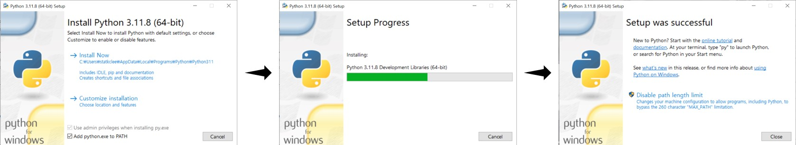

reticulate::use_virtualenv("gpt-ds", required = TRUE)챗GPT 환경 구축
챗GPT 데이터 과학 환경을 구축하기 위해서는 파이썬 설치, 가상환경 설정, .Rprofile 설정 등 사전 작업이 필요하다. 쿼토를 통해 감성 분석을 수행하기에 앞서, 이와 같은 환경 구축 작업을 선행함으로써 안정적이고 효율적인 분석 환경을 마련할 수 있다. 체계적인 사전 준비를 통해 원활한 분석 수행이 가능해진다.
graph LR
classDef default fill:#fff,stroke:#000,stroke-width:1px,color:#000
subgraph quarto["<strong>쿼토</strong>"]
subgraph virtual[가상환경 설정]
C(파이썬 설치) --> D(가상환경 생성)
D --> G[패키지 설치]
end
subgraph profile[".Rprofile 설정"]
I["RETICULATE_PYTHON<br>환경변수 설정"] --> J["쿼토/R 시작 <br> 가상환경 활성화"]
end
virtual --> K["감성 분석<br>코드 실행"]
profile --> K
end
파이썬 설치
가장 최신 파이썬 3.12 버전 대신 안정성이 검증된 파이썬 3.11 버전 다운로드 웹사이트에서 운영체제에 맞게 설치한다. 설치 과정에서 Add Python 3.11 to PATH 옵션을 반드시 선택한다.

library(reticulate)
repl_python()
#> Python 3.11.8 (C:/Users/<사용자명>/AppData/Local/Programs/Python/Python311/python.exe)
#> Reticulate 1.35.0 REPL -- A Python interpreter in R.
#> Enter 'exit' or 'quit' to exit the REPL and return to R.
#> >>>가상환경
파이썬 가상환경을 생성하는 이유는 프로젝트별로 필요한 패키지를 분리하여 관리하여 충돌을 방지하기 위함이다. 파일명(--name) 방식과 경로명(--prefix) 방식이 있으며 서로 장단점이 있다. 여기서 경로명 방식과 reticulate 패키지를 활용하여 R 내부적으로 수행하는 방식을 소개한다. virtualenv_remove() 함수를 사용하여 가상환경을 삭제할 수 있다.
virtualenv_create("d:/envs/gpt-ds")
#> virtualenv_remove("d:/envs/gpt-ds")
#> Remove virtual environment 'd:/envs/gpt-ds'? [Y/n]: Y
#> Virtual environment "d:/envs/gpt-ds" removed.
virtualenv_list()
#> [1] "gpt-ds"use_virtualenv() 함수를 사용하여 가상환경을 활성화하고 virtualenv_install() 함수를 사용하여 필요한 패키지를 설치한다. 감성분석을 위해서 transformers 패키지가 필요한데 torch, torchvision 의존성으로 함께 설치한다.
library(reticulate)
use_virtualenv("gpt-ds", required = TRUE)
virtualenv_install("d:/envs/gpt-ds", c("transformers", "torch", "torchvision", "torchtext")).Rprofile 설정
매번 R을 실행할 때마다 파이썬 가상환경을 활성화하는 것은 번거롭다. .Rprofile 파일에 RETICULATE_PYTHON 환경변수를 설정하게 되면, .Rprofile 파일은 R을 시작할 때 자동으로 파이썬 가상환경이 활성화된다.
usethis::edit_r_profile()usethis::edit_r_profile() 명령어를 통해 .Rprofile 파일을 열고 파이썬 가상환경 gpt-ds의 python.exe 경로를 RETICULATE_PYTHON 환경변수로 설정한다.
Sys.setenv(RETICULATE_PYTHON="D:/envs/gpt-ds/Scripts/python.exe")library(reticulate)
py_config()
#> python: D:/envs/gpt-ds/Scripts/python.exe
#> libpython: C:/Users/statkclee/AppData/Local/Programs/Python/Python311/python311.dll
#> pythonhome: D:/envs/gpt-ds
#> version: 3.11.8 (tags/v3.11.8:db85d51, Feb 6 2024, 22:03:32) [MSC v.1937 64 bit (AMD64)]
#> Architecture: 64bit
#> numpy: D:/envs/gpt-ds/Lib/site-packages/numpy
#> numpy_version: 1.26.4
#>
#> NOTE: Python version was forced by RETICULATE_PYTHON감성분석
앞서 구축한 파이썬 가상환경에서 음식점 리뷰에 대한 감성분석을 수행하는 사례를 살펴본다. 먼저 transformers 라이브러리 pipeline을 사용하여 텍스트 분류 모델을 로드하고, 한국어 문장을 입력으로 받아 다국어 버트(bert) 모형으로 감성 분석을 수행한다. 사전 학습된 모델을 활용하여 자연어 처리 감성분석 작업을 수행하는 방법이 앞서 구축한 파이썬 가상환경에서 수행되고 있다.
from transformers import pipeline
prompt = "분위기도 좋았고 음식도 아주 훌륭했어."
classifier = pipeline("text-classification",
model='nlptown/bert-base-multilingual-uncased-sentiment')
prediction = classifier(prompt)
print(prediction)[{'label': '4 stars', 'score': 0.5038140416145325}]